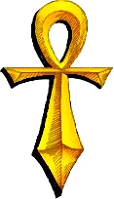

CHAPTER IIIFELLOWSHIPUnder Lord British's rule, each of the eight towns has developed into a cultural centre for one of the eight major professions. In this manner, an orderly society has evolved with little friction between the diverse inhabitants. No one is restricted to their town of birth, and one frequently finds people of various professions visiting a particular town. These are the eight major professions: MAGE. The Magi of Britannia gather in Moonglow, near the Lycaeum, where they can study the ancient mystical scrolls of the Library. The strictures of their profession permit Magi to wear only cloth armour and carry either a staff, dagger, or sling. Unconfirmed rumors indicate that the highest Adepts have acquired the use of arcane magical weapons. The primary weapon of the Mage is magic. As the Mage becomes more advanced, more powerful spells can be woven. Some of the greatest spells have been known to shake the earth, or raise the dead!
BARD. The Bards of Britain entertain the people with their wonderful ballads and tales of heroic deeds. Bards not only chronicle the deeds of valor, but perform them as well. The weapon of choice for a Bard is the sling, but they may use a crossbow at times. All armour save that of Leather is shunned by these minstrels, for they find metal harsh and too noisy for their sensitive ears. The Bard also dabbles in magic and makes a fine companion on a long journey. FIGHTER. From the town of Jhelom hail the mighty Fighters. They pass their lives in training and have the use of all weapons and armour, though most prefer the double-edged Britannian sword, a devastating weapon in the hands of a skilled fencer. Fighters have little or no magical talents, for they believe only in the use of arms and fear that magical training saps the will and concentration of a true warrior. They possess a particular affinity for horses, and are most useful companions on travels to uncharted regions.
DRUIDS. The Druids are fierce fighters, especially when defending their beloved groves. They hold all trees to be sacred and their town of Yew lies deep in the woods. Druids are also impressive practitioners of the mystic arts and their knowledge of herbs is without peer. They may fight with different types of bows, although their preferred weapon is the mace. The Druidic philosophy forbids the wearing of metal of any kind, so Leather is their armor of choice. The Druid's knowledge of the ways of the woodlands make them invaluable as fellow travellers. TINKER. The Tinkers of Minoc are both highly skilled artisans and superb fighters. They are generally suspicious of magic, believing that only hand-crafted artifacts possess true value, and thus use it seldomly. A Tinker may use any weapon, however, the double-bladed war axe is preferred. Tinkers will use any non-magical armour. A travelling party with a Tinker need never fear for repair of any metal or wooden items. PALADIN. These great fighters live in the town of Trinsic in the southern part of Britannia. They are expert in all forms of combat and weapon use, and are one of the few professions that will make use of the magical chain armour when it is available. Their deep beliefs in the value of good lend strength to their magic, which they wield with certain flair. Paladins are thus very formidable opponents and highly valued allies. RANGER. Off the western shore of the mainland lies the fair island of the Rangers. Venturing far from their retreat at Skara Brae, they strive to improve the conditions of people throughout the realm. Rangers are well-versed in woods lore and fight fiercely with most weapons, but shun all but leather armour. They are also proficient magic users and faultless trackers in any wilderness. SHEPHERD. It is uncertain whether Shepherds are skilled in any form of warfare or in the mystic arts. However, they are highly valued travelLing companions for their humility and their knowledge of the ways of the land.
A traveller in Britannia need not journey alone. In each town one may -- indeed one ought to -- converse with all the inhabitants. If thy personal philosophy of life is close to that of the town, then thou may ask one of the residents to join thy party. If amenable to your invitation, this person will travel with thee, aid thee, and fight with thee. He or she will stay loyal to thee only as long as thou stay true to thy beliefs. If at any time, through actions or deeds, thou stray from the Path, then thy companions will desert thee to thy Fate. Remember, these are Free Companions -- not servants or mercenaries. Such is their faith in the as their leader, that all gold and supplies held by the party is given into thy care for the good of all. Use this trust wisely! 
|